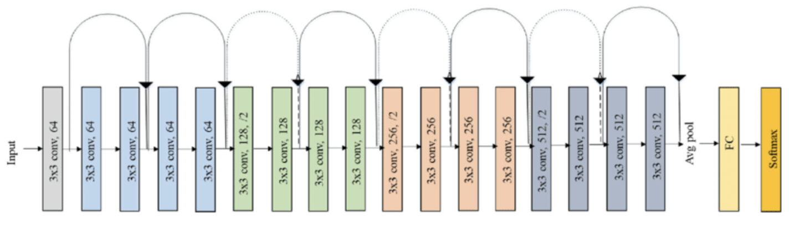

NLP: sentiment analysis, text classification, machine translation.
Other domains: recommendation systems, fraud detection, medical diagnostics.
Freezing Layers
Retain pre-trained feature extractors
Only train newly added layers
Code
import torchimport torchvisionimport torchvision.transforms as transformsimport torch.nn as nnimport torch.optim as optimfrom torch.utils.data import DataLoader# Load pre-trained ResNet18base_model = torchvision.models.resnet18(pretrained=True)# Freeze all layersfor param in base_model.parameters(): param.requires_grad =False# Inspect final layerprint(base_model.fc)####Alternatively if tuning all layers of resnet18model = torchvision.models.resnet18(pretrained=False, num_classes=10)
Formulation:\(y = F(x) + x\), where \(x\) is the input and \(F(x)\) is the learned transformation.
Benefit: mitigates vanishing gradients.
ImageNet Data
Training set: ~1.28million images spanning 1,000 object classes
Input resolution: models commonly expect inputs resized to 224×224 pixels

Code Example: ResNet18 on CIFAR-10 (PyTorch)
import torchimport torch.nn as nnimport torch.optim as optimfrom torchvision import datasets, transforms, modelsfrom torch.utils.data import DataLoader# Data transforms: resize to 224x224, normalize with ImageNet statstransform = transforms.Compose([ transforms.Resize((224,224)), transforms.ToTensor(), transforms.Normalize(mean=[0.485,0.456,0.406], # ImageNet mean per channel std=[0.229,0.224,0.225]), # ImageNet std per channel])# Load CIFAR-10 dataset (50k train, 10k test)train_dataset = datasets.CIFAR10(root='./data', train=True, download=True, transform=transform)test_dataset = datasets.CIFAR10(root='./data', train=False, download=True, transform=transform)train_loader = DataLoader(train_dataset, batch_size=32, shuffle=True, num_workers=2)test_loader = DataLoader(test_dataset, batch_size=32, shuffle=False, num_workers=2)
Adding Custom Heads
Design your own top layers (Dense, Dropout, Activation)
Tailor capacity to dataset size
# Replace your model (classifier head for 10 classes)in_features = model.fc.in_features## example 1: Just a linear output layermodel.fc = torch.nn.Linear(in_features, 10)## Some other set of layersmodel.fc = nn.Sequential( nn.Conv2d(num_ftrs....) nn.MaxPool2d()... nn.Linear(...), nn.ReLU(), nn.Dropout(0.5), nn.Linear(..., 10))
Training the model
# Move to devicedevice = torch.device('cuda'if torch.cuda.is_available() else'cpu')model = model.to(device)# Loss and optimizer (only head params)criterion = nn.CrossEntropyLoss()optimizer = optim.SGD(model.parameters(), lr=0.001, momentum=0.9)# Training loopmodel.train()for epoch inrange(10): running_loss =0.0for images, labels in train_loader: images, labels = images.to(device), labels.to(device) optimizer.zero_grad() outputs = model(images) loss = criterion(outputs, labels) loss.backward() optimizer.step() running_loss += loss.item()print(f"Epoch {epoch+1}, Loss: {running_loss/len(train_loader):.4f}")